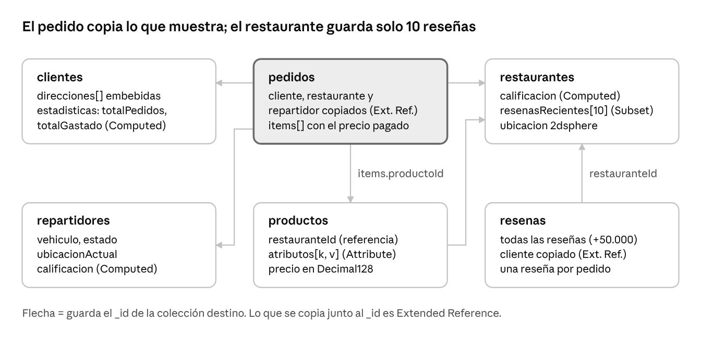
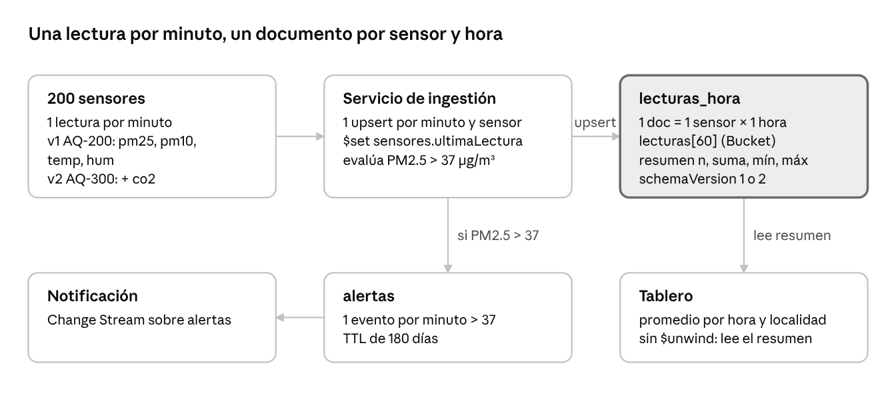

Universidad El Bosque · Ingeniería de Sistemas
Bases de Datos 2 · Docente: Christian Felipe Duarte
Taller MQL: consultas, agregación e índices en MongoDB
Dieciséis puntos ejecutados en MongoDB Atlas desde VS Code, con modelado por patrones de diseño
Resumen
El taller reúne 16 puntos que se resolvieron en MongoDB Atlas con MongoDB for VS Code. Las partes A, B y C trabajan sobre la base de
ejemplo sample_mflix (películas y comentarios): consultas con find, agregaciones, escritura con
$out, updateMany y deleteMany, y un análisis con explain antes y después de crear un índice.
La parte D propone el modelo de dos casos con patrones de diseño: una plataforma de domicilios y una red de sensores de calidad del aire en Bogotá. Cada
caso se carga con datos de prueba y se consulta en una base propia, taller_parteD.
En el informe cada punto tiene su consulta, la captura de la ejecución y una explicación del resultado. Esta página resume los resultados principales; el informe de 35 páginas, el modelo de la parte D (13 páginas), el script con los 16 puntos y los documentos de ejemplo se pueden descargar al final.
| Parte | Puntos | Tema |
|---|---|---|
| A | 1 a 5 | Consultas con find: filtros, arreglos, regex y proyección |
| B | 6 a 10 | Agregación: $unwind, $group, $lookup, cálculo de décadas y estadísticas |
| C | 11 a 14 | Escritura ($out, updateMany, deleteMany) e índices con explain |
| D | 15 y 16 | Modelado con patrones: domicilios y calidad del aire |
Parte A · Consultas con find
| Punto | Enunciado | Técnica | Resultado |
|---|---|---|---|
| 1 | Drama entre 2000 y 2010 con rating de 8 o más | Filtro con AND implícito, proyección, sort, limit y countDocuments | Encabezan Band of Brothers y The Dark Knight |
| 2 | Películas con Tom Hanks no dirigidas por Steven Spielberg | Igualdad sobre arreglo y $ne | Splash, Nothing in Common, Big y Punchline, entre otras |
| 3 | Exactamente tres géneros, incluidos Comedy y Romance | $size y $all | Wild and Woolly, For Heaven's Sake y City Lights, entre otras |
| 4 | Sin clasificación, UNRATED o NOT RATED | $or, $exists y $in | Primero aparecen clásicas del cine mudo como Gertie the Dinosaur |
| 5 | Títulos que empiezan por The y terminan en Man | Expresión regular /^The.*Man$/i | También entran The Guardsman y The Devil Is a Woman, porque terminan en «man» |
Para tener en cuenta
En MongoDB, buscar un valor sobre un campo que es un arreglo (genres, cast) comprueba si algún elemento coincide. Por eso
directors: { $ne: "Steven Spielberg" } descarta también las películas codirigidas por él.
Parte B · Agregación
| Punto | Enunciado | Etapas principales | Resultado |
|---|---|---|---|
| 6 | Estadísticas por género (más de 500 películas) | $match, $unwind, $group, $match, $project | Documentary encabeza: 1.824 películas y promedio de 7,37; luego History (7,17) y War (7,13) |
| 7 | Top 5 de directores con películas de rating 7,5 o más | $unwind, $group con $push, $slice | Scorsese (20), Miyazaki (17), Wyler (17), Bergman (16) y Spielberg (15) |
| 8 | Películas por década desde 1950 | $floor, $divide, $multiply, $concat | De 617 películas en los 1950s a 7.196 en los 2000s |
| 9 | Top 10 de películas más comentadas | $group, $sort, $limit, $lookup | El $lookup va al final: se ejecuta 10 veces y no 21.349 |
| 10 | Usuarios con más de 250 comentarios | $group con $min y $max, $match | 7 usuarios; el primero es roger_ashton-griffiths, con 277 comentarios |
Ojo con los datos
En sample_mflix hay campos con valores vacíos o de otro tipo: imdb.rating a veces viene vacío y year a veces es texto.
Por eso varios pipelines filtran con $type: "number" antes de agrupar. Filtrar antes de $unwind da el mismo resultado y desenrolla menos documentos.
db.movies.aggregate([
{ $match: { "imdb.rating": { $type: "number" } } },
{ $unwind: "$genres" },
{ $group: { _id: "$genres", totalPeliculas: { $sum: 1 },
promedioRating: { $avg: "$imdb.rating" }, ratingMaximo: { $max: "$imdb.rating" } } },
{ $match: { totalPeliculas: { $gt: 500 } } },
{ $project: { _id: 0, genero: "$_id", totalPeliculas: 1,
promedioRating: { $round: ["$promedioRating", 2] }, ratingMaximo: 1 } },
{ $sort: { promedioRating: -1 } }
]);Parte C · Escritura e índices
| Punto | Enunciado | Operación | Resultado |
|---|---|---|---|
| 11 | Crear la colección peliculas_pareja con las películas de 2015 y una categoría por rating | $project con $switch y $out | 432 películas: 139 Alta (7,5 o más), 231 Media (6 o más) y 62 Baja |
| 12 | Marcar como revisadas las de categoría Media y subir su rating 0,1 | updateMany con $set e $inc | matchedCount y modifiedCount de 231 |
| 13 | Eliminar las de categoría Baja | deleteMany | deletedCount de 62; quedan 0 películas Baja |
| 14 | Comparar el plan de la consulta del punto 1 antes y después de un índice | explain("executionStats") e índice compuesto | De COLLSCAN a IXSCAN; ver la tabla |
En el punto 11 se filtran solo los ratings numéricos. Un valor vacío se compara como mayor que cualquier número y quedaría
clasificado como «Alta». En el punto 12, valores como 7,3999999999999995 son el error normal de los decimales en Double.
Punto 14 · El índice según la regla ESR
El índice { genres: 1, "imdb.rating": -1, year: 1 } sigue la regla ESR: primero la igualdad (genres), luego el campo de orden
(imdb.rating) y al final el rango (year). Así el índice entrega las películas ya ordenadas por rating y desaparece la etapa SORT.
| Métrica | Sin índice | Con índice ESR |
|---|---|---|
| Etapa del plan ganador | SORT sobre COLLSCAN | FETCH sobre IXSCAN (sin SORT) |
totalDocsExamined | 21.349 | 10 |
totalKeysExamined | 0 | 20 |
nReturned | 10 | 10 |
executionTimeMillis | 21 | 1 |
Las 20 claves examinadas frente a 10 documentos leídos muestran que MongoDB descartó los años fuera del rango 2000 a 2010 usando solo el índice, sin leer esos documentos. Al final del script el índice se elimina.
Parte D · Modelado con patrones de diseño
En esta parte se diseñó el modelo de dos casos, se cargaron documentos de ejemplo en la base taller_parteD, se crearon los índices y se
comprobó con explain que las consultas de negocio usan índice. El informe explica, para cada patrón, qué pasaría si no se aplicara.
Punto 15 · Caso 1: plataforma de domicilios
El pedido guarda una copia del plato, el precio y los datos del restaurante del momento de la compra, y el restaurante guarda solo sus 10 reseñas más recientes con
la calificación ya calculada. Así el historial de pedidos y la ficha del restaurante se resuelven leyendo una sola colección, sin $lookup. El modelo tiene 6
colecciones (clientes, pedidos, restaurantes, repartidores, productos y reseñas).

| Patrón | Dónde se aplica | Por qué |
|---|---|---|
| Extended Reference | Datos de cliente, restaurante, repartidor e ítems copiados en pedidos | El historial muestra restaurante, plato y precio sin $lookup. Copiar los ítems es además una regla de negocio: el precio pagado no cambia si el menú cambia. |
| Subset | restaurantes.resenasRecientes (10) y colección resenas | La ficha solo muestra las 10 reseñas más recientes. Embeber 50.000 reseñas de unos 300 bytes acercaría el documento a unos 15 MB, cerca del límite de 16 MB. |
| Computed | calificacion, estadisticas y pedidos.total | Se leen en cada visita y solo se escriben cuando llega una reseña o un pedido. |
| Attribute | productos.atributos (pares k/v) | Cada plato tiene atributos distintos (tamaño, picante, vegano, calorías) y un solo índice compuesto sirve para filtrar por cualquiera. |
| Embebido y referencia | Direcciones embebidas en clientes; menú y reseñas referenciados | Las direcciones son pocas y se leen con el cliente; el menú y las reseñas crecen y se consultan aparte. |
Consulta (a): pedidos de un cliente en el último mes con el total pagado. Un $facet devuelve en una sola respuesta el listado y el resumen:
3 pedidos y 167.100 COP pagados, y el pedido cancelado y el de septiembre quedan fuera. Se examinan 4 documentos y se devuelven 3 con IXSCAN.
Consulta (b): top 5 de restaurantes mejor calificados de Bogotá, con un mínimo de 50 reseñas para que un restaurante con pocas no encabece el ranking. Se examinan 5 documentos y se devuelven 5, porque el índice ya entrega los restaurantes ordenados. Una consulta extra muestra el patrón Attribute: los platos veganos con picante hasta 2.
Punto 16 · Caso 2: calidad del aire en Bogotá
Cada documento de lecturas_hora agrupa las 60 lecturas de un sensor en una hora y trae su resumen ya calculado. Las 288.000 lecturas diarias
de la ciudad (200 sensores por 1.440 minutos) quedan en 4.800 documentos por día, 60 veces menos, y el tablero lee solo los resúmenes. El modelo tiene 3 colecciones:
sensores, lecturas_hora y alertas.

| Patrón | Dónde se aplica | Por qué |
|---|---|---|
| Bucket | lecturas_hora: 60 lecturas por documento | Las lecturas llegan en orden y se consultan por rango de tiempo. Sin él habría unos 105 millones de documentos al año; con buckets, unos 1,75 millones. |
| Computed | resumen (n, suma, mínimo y máximo por variable) y alertasPm25 | El tablero lee promedios horarios todo el tiempo. Se guardan la suma y n para que el promedio de varios sensores sea exacto: suma de sumas sobre suma de n. |
| Schema Versioning | schemaVersion en sensores y lecturas_hora | Los sensores nuevos (AQ-300) agregan CO₂ y llevan la versión 2; los históricos siguen en versión 1 sin migrar. |
| Extended Reference | localidad copiada en cada bucket y cada alerta | El tablero agrupa por localidad y un sensor no cambia de localidad, así que se evita el $lookup. |
La carga simula un día completo para 3 sensores (dos en Kennedy y uno en Chapinero): 4.320 lecturas, una por minuto, cada una con un upsert.
El resultado son 72 buckets (3 sensores por 24 horas) y 144 minutos en alerta, todos en Kennedy.
db.lecturas_hora.updateOne(
{ sensorId: "SEN-KEN-014", inicio: ISODate("2026-11-03T12:00:00Z") },
{ $push: { lecturas: l },
$inc: { nLecturas: 1, "resumen.pm25.n": 1, "resumen.pm25.suma": l.pm25,
alertasPm25: l.pm25 > 37 ? 1 : 0 },
$min: { "resumen.pm25.min": l.pm25 },
$max: { "resumen.pm25.max": l.pm25 },
$setOnInsert: { localidad: "Kennedy", schemaVersion: 1, fin: ISODate("2026-11-03T13:00:00Z") } },
{ upsert: true }
);
Consulta (a): promedio horario de PM2.5 de una localidad en un día. El pico en Kennedy es a las 07:00, con 37,4 µg/m³ de promedio y 44,5 de máximo, por encima
del umbral de 37. No hace falta $unwind, porque se leen solo los resúmenes. Se examinan 48 buckets y se devuelven 48 (2 sensores por 24 horas).
Consulta (b): sensores con alertas en la última semana. SEN-KEN-014 tuvo 127 minutos en alerta repartidos en 6 horas (máximo 44,5) y SEN-KEN-022 tuvo 17 minutos en 2 horas (máximo 39,8). Un índice parcial solo contiene las horas con alerta, así que se examinan y devuelven 8 y no se recorren las otras 64. La consulta extra muestra el Schema Versioning: el CO₂ promedio (427 ppm) solo se calcula para los buckets de versión 2.
Archivos del taller
| Archivo | Contenido |
|---|---|
| Informe del taller (PDF, 35 págs.) | Los 16 puntos con consulta, captura y explicación |
| Modelo de la parte D (PDF, 13 págs.) | Diagramas, patrones, índices y consultas de los dos casos |
| Script con los 16 puntos (.js) | Un bloque comentado por punto; se ejecuta con load() en mongosh |
| Documentos de ejemplo (.zip) | JSON de ambos casos, versiones 1 y 2 de los buckets y de los sensores |
Las colecciones peliculas_pareja y taller_parteD se crean al ejecutar el script; no modifican las colecciones originales de sample_mflix
(el índice del punto 14 se elimina al final).